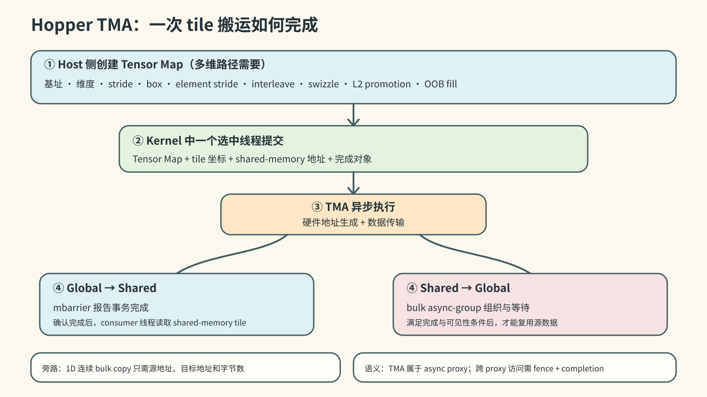
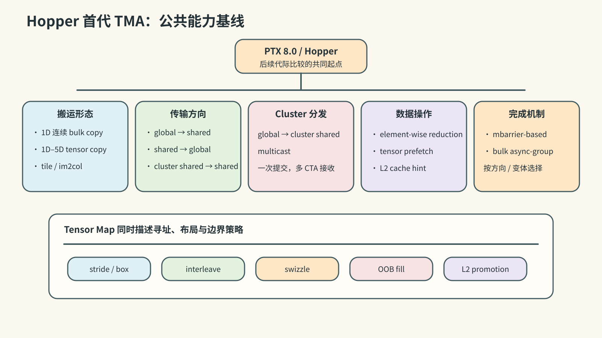
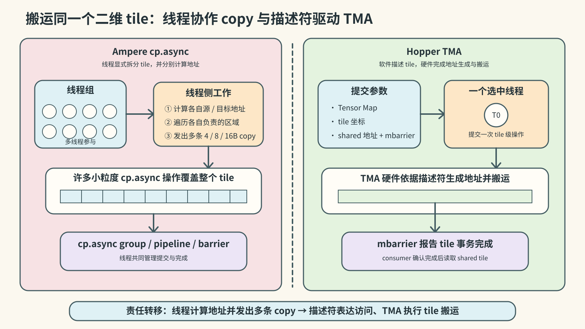
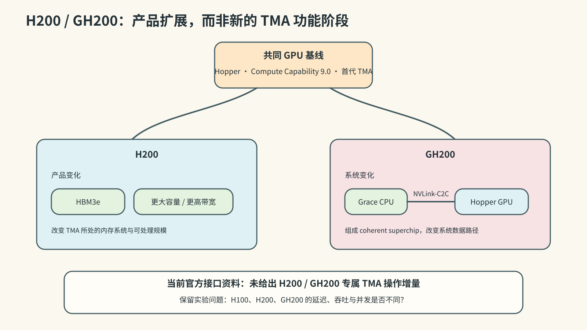
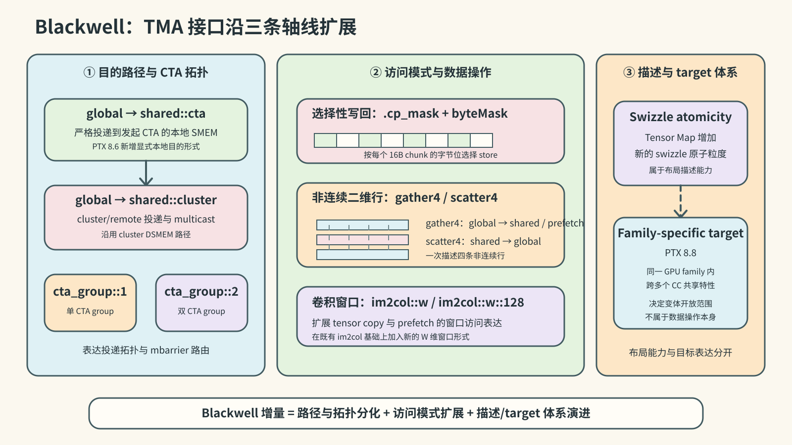
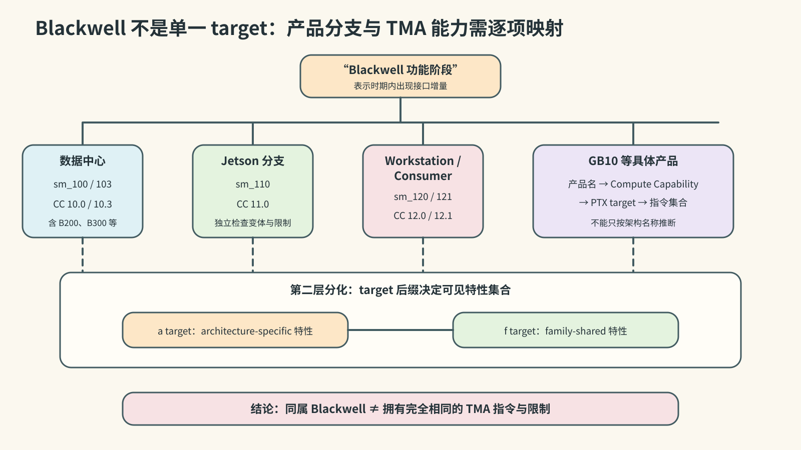
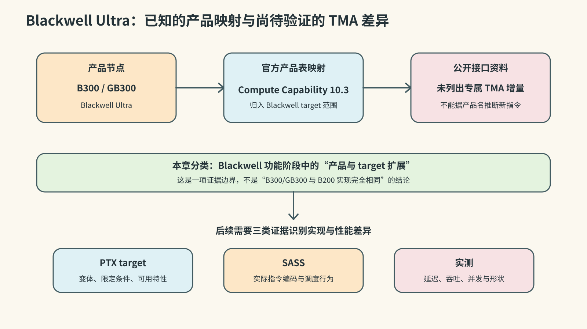
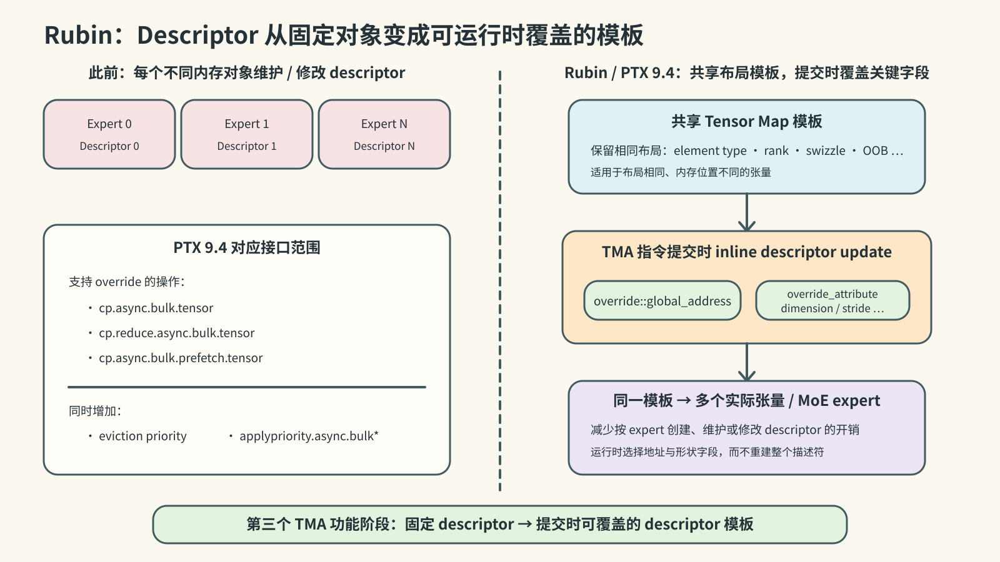

第一章：NVIDIA 产品迭代与 TMA 概述
调研截止：2026-10-12
本文是 NVIDIA TMA 调研系列 第一章；引用编号见参考资料索引。下一篇：Hopper 第一代 TMA 的 PTX 设计。
1.1 研究对象与分析口径
1.1.1 TMA 的工作定义
本文所称 TMA（Tensor Memory Accelerator），是 NVIDIA 从 Hopper/Compute Capability 9.0 开始提供的一组面向 shared memory 的大粒度异步数据搬运能力及其编程接口。当前 CUDA Programming Guide 将 TMA 作为总称，并把具体操作分成两类 [S001]：
- bulk-asynchronous copy：以指针和字节数描述一维连续区域；
- bulk-tensor asynchronous copy：以 tensor map 和张量坐标描述一至五维区域。
这两类操作通常由一个被选中的线程发起，由异步路径执行，并以显式完成机制通知使用者。多维操作进一步把全局张量的维度、stride、box、元素步长、interleave、swizzle、越界填充和 L2 promotion 等属性编码在 tensor map 中 [S001][S002][S005]。
官方资料会从不同层次描述 TMA。Hopper 架构文章称其为新的 async memory copy unit；CUDA Programming Guide 用 TMA 统称相关功能；CuTe 文档则从软件使用角度称其为一组指令 [S001][S002][S009]。本文据此采用以下术语层次：
| 术语 | 本文中的含义 |
|---|---|
| TMA | 整体硬件加速机制及其对外能力 |
| bulk asynchronous copy | 不使用 tensor map 的一维连续大粒度异步拷贝 |
| bulk-tensor asynchronous copy | 使用 tensor map 的一至五维张量异步拷贝 |
| tensor map / TMA descriptor | 描述全局张量及其 TMA 访问属性的不透明对象 |
| TMA unit / engine | 官方架构资料所称的异步拷贝硬件单元；内部结构留待后续硬件实现分析 |
1.1.2 官方名称
NVIDIA 文档先后使用过两种全称：
- Hopper 架构文章在 2022 年使用 Tensor Memory Accelerator [S002]；
- CUDA 12.0 Driver API 和 CUDA 12.5 Programming Guide 使用 Tensor Memory Access [S005][S008]；
- 当前 CUDA Programming Guide 使用 Tensor Memory Accelerator [S001]。
两种全称在相关文档中都指向 TMA 编程模型。本文统一使用当前名称 Tensor Memory Accelerator；引用历史资料时保留原文名称。
1.1.3 研究范围
本调研覆盖以下对象：
- 一维 bulk copy 与一至五维 bulk-tensor copy；
- global memory、CTA shared memory 和 cluster distributed shared memory 之间的受支持路径；
- tensor map 的寻址、布局、越界处理和缓存属性；
- multicast、reduction、prefetch、mask、gather/scatter 和 descriptor override 等扩展；
- TMA 操作的发起方式、async proxy 语义以及 mbarrier、bulk async-group 等完成机制；
- 各产品、Compute Capability、PTX target、SASS 实现和硬件行为之间的对应关系。
mbarrier、thread block cluster、distributed shared memory 和 async proxy 是 TMA 编程模型的配套机制，同时也具有独立用途。CUDA pipeline、cuda::barrier、cuda::memcpy_async 和 CUTLASS/CuTe TMA wrapper 属于高层接口或软件封装。后续章节会分析它们与 TMA 的接口，但分别保留其自身的概念边界 [S001][S002][S006][S009]。
作为比较基线，本文还研究 Ampere cp.async。它提供小粒度 global-to-shared 异步拷贝，是 Hopper TMA 的直接技术前身 [S002][S003][S006][S007]。通用 host-device copy engine、Tensor Core 以及 Blackwell Tensor Memory（TMEM）分别承担系统级搬运、矩阵计算和片上张量存储功能；本文只在它们与 TMA 数据路径发生直接联系时讨论这些对象。
1.1.4 代际判定方法
本文分别记录四条时间轴：GPU 产品、Compute Capability、PTX 接口和 TMA 硬件实现。代际判断使用三种层级：
| 层级 | 判定条件 |
|---|---|
| 产品扩展 | 新产品沿用既有 Compute Capability 或既有 TMA 接口，主要变化发生在容量、带宽或系统形态 |
| 功能阶段 | PTX 或官方架构资料给出新的 TMA 对外能力，且适用 target 可以确定 |
| 硬件实现代际 | SASS、微架构资料或性能实验显示执行单元、数据路径、队列或吞吐机制发生实质变化 |
第一章可以确定产品扩展和功能阶段。硬件实现代际仍需结合后续的 SASS、硬件资料、专利和性能实验共同确认。
1.2 TMA 的技术前身与引入动机
1.2.1 传统 global-to-shared 搬运
GPU kernel 常把 global memory 中的数据 tile 搬入 shared memory，再由线程块内的计算线程重复使用。传统路径由线程完成以下工作：
- 计算每个元素的 global address；
- 从 global memory 读取到寄存器；
- 从寄存器写入 shared memory；
- 同步后消费 shared-memory tile。
较大的多维 tile 因而需要大量线程级 load/store、地址计算、边界判断和循环控制。寄存器既保存计算状态，也承担数据中转。
1.2.2 Ampere cp.async
Ampere/CC 8.0 引入硬件加速的 global-to-shared asynchronous copy。cp.async 可以绕过中间寄存器，并通过 pipeline 或 barrier 将搬运与计算重叠 [S006][S007]。单条 cp.async 处理 4、8 或 16 字节；完成一个 tile 时，线程共同计算地址并发出多条指令。
Ampere 因此建立了异步、寄存器旁路的 global-to-shared 路径。tile 级的多维地址生成、stride、边界和区域遍历仍由线程指令完成 [S002]。
1.2.3 Hopper TMA 的设计增量
Hopper TMA 把搬运区域的描述和地址生成从逐元素线程指令提升到 tile 级操作 [S002][S003]：
- 一个被选中的线程可以发起整个大块或张量 tile 的搬运；
- tensor map 保存全局张量布局和搬运属性；
- 硬件根据 tensor map 与 tile 坐标生成地址，并处理受支持的边界和布局转换；
- 数据直接在 global memory 与 shared memory 相关空间之间传输；
- 发起线程可继续执行其他工作，消费者通过完成机制等待数据；
- cluster multicast 可把一次全局数据获取分发到多个 CTA 的 shared memory。
相较 Ampere，TMA 的主要变化是操作粒度、地址生成位置、数据路径范围和布局表达能力，而异步执行与寄存器旁路是两代机制共有的基础。
1.3 产品、架构与软件时间线
1.3.1 四个不同的“引入”节点
一项架构能力通常依次经历产品公布、硬件供货、工具链支持和公共编程接口发布。TMA 的首代引入也分布在多个节点：
| 时间 | 节点 | 对 TMA 的意义 | 依据 |
|---|---|---|---|
| 2020 | Ampere A100，CC 8.0 | cp.async 与 split arrive/wait barrier 构成直接技术前身 |
[S006][S007] |
| 2022-03-22 | Hopper/H100 发布 | NVIDIA 首次公开 TMA unit、descriptor 地址生成和 1D–5D 搬运 | [S002][S014] |
| 2022-09-20 | H100 宣布 full production | Hopper TMA 进入量产产品阶段 | [S014] |
| 2022-10 | CUDA 11.8、PTX 7.8 | 工具链支持 Hopper/sm_90；PTX 已建立 cluster 等基础设施 |
[S013] |
| 2022-12 | CUDA 12.0、PTX 8.0 | public PTX 发布 bulk/TMA 操作族，Driver API 提供 tensor map 管理 | [S004][S005][S012][S024] |
| 2023-11 | H200 发布 | Hopper 产品扩展到 HBM3e、更高容量和带宽 | [S011][S015] |
| 2024-03 | B200/GB200 发布 | Blackwell 数据中心产品节点，官方产品表映射为 CC 10.0 | [S011][S016] |
| 2024-05，CUDA 12.5 | Programming Guide 新增系统化的 TMA 章节 | 高层 CUDA C++ 文档集中说明 TMA 用法 | [S008] |
| PTX 8.6–8.8 | Blackwell 相关 target 与 TMA 扩展 | 增加 CTA-local destination、copy mask、gather/scatter 和 family-specific target 等能力 | [S018] |
| 2025-03 | B300/GB300 发布 | Blackwell Ultra 产品节点，官方产品表映射为 CC 10.3 | [S011][S017] |
| 2026-01 至 03 | Rubin 发布并宣布 full production | 官方公开 enhanced TMA 与 inline descriptor update | [S020][S021] |
| PTX 9.4 | descriptor override 等新表达 | 公开 global address 与 descriptor attribute override，以及新的缓存优先级控制 | [S022] |
Hopper 的架构介绍早于公共 PTX 指令族约九个月。本文把 2022 年 3 月作为 TMA 的架构公开节点，把 CUDA 12.0/PTX 8.0 作为首个成体系、可系统分析的公共底层编程接口节点 [S002][S004][S012][S014]。
1.3.2 产品与 Compute Capability
NVIDIA 当前产品表给出的映射如下 [S011]：
| 产品 | Compute Capability | 本章分类 |
|---|---|---|
| A100、A30 | 8.0 | cp.async 前代基线 |
| H100、H200、GH200 GPU | 9.0 | Hopper 首代 TMA 产品族 |
| B200、GB200 | 10.0 | Blackwell 数据中心功能扩展节点 |
| B300、GB300 | 10.3 | Blackwell Ultra 产品与 target 扩展节点 |
| Jetson T4000、T5000 | 11.0 | 独立产品分支，按 sm_110 目标核对能力 |
| RTX PRO Blackwell、GeForce RTX 50 系列 | 12.0 | Blackwell workstation/consumer 分支 |
| GB10 / DGX Spark | 12.1 | sm_120 family 的后续产品分支 |
| Rubin GPU | 产品表尚未给出 CC 映射 | 官方已确认 enhanced TMA |
当前 CUDA Programming Guide 把 TMA unit 列为 CC 9.0 及后续架构支持的功能，同时把 CC 10.0、10.3、10.7、11.0 和 12.x 分开列出 [S023]。产品名称只能确定研究入口；每项 TMA 能力仍需依据具体 PTX target 判定。
1.3.3 baseline、architecture-specific 与 family-specific target
从 CC 9.0 开始，CUDA 区分基础特性与 architecture-specific 特性；从 CC 10.0 开始，又增加 family-specific 特性 [S023]：
sm_90表示 Hopper 基础目标，sm_90a开放 Hopper architecture-specific 特性；sm_100a、sm_103a等atarget 只兼容对应 Compute Capability；sm_100f、sm_103f、sm_120f等ftarget 表示同一 family 共享的特性集合；- 同一产品品牌下的不同 Compute Capability 可以具有不同的 tensor mode、数据类型、swizzle 或其他限制。
以 multicast 为例，CUDA Programming Guide 建议在 sm_90a 上使用其优化路径；PTX 的其他 TMA 扩展也分别规定最低 target 或 a/f target [S001][S018]。第二章记录 Hopper 变体的 target 限制，第三章继续整理 Blackwell 与 Rubin 的 target 分化。
1.4 Hopper：首代 TMA 的能力基线
1.4.1 基本执行模型

多维 TMA 操作的基本流程为：
- 软件通过 CUDA API 创建 tensor map，编码 global tensor 的基址、维度、stride、box、element stride、interleave、swizzle、L2 promotion 和 OOB fill 等属性；
- kernel 中的一个被选中线程提交 tensor map、tile 坐标、shared-memory 地址和完成对象；
- TMA 异步执行地址生成与数据传输；
- global-to-shared 路径通常以 mbarrier 报告事务完成，shared-to-global 路径以 bulk async-group 组织和等待；
- 计算线程在确认完成后消费 shared-memory tile，或在写回路径满足相应完成与可见性条件后复用源数据。
一维连续 bulk copy 直接使用源地址、目标地址和字节数，不需要 tensor map [S001]。TMA 操作属于 async proxy；跨 generic proxy 与 async proxy 的访问需要遵循相应 fence 和完成语义 [S001][S012]。
1.4.2 首代公共能力

PTX 8.0 建立了 Hopper TMA 的公共能力基线 [S002][S003][S012]：
- 一维连续 bulk copy；
- 由 tensor map 描述的一至五维 tensor copy；
- global-to-shared 与 shared-to-global 双向传输；
- 同一 cluster 内的 shared-to-shared 传输；
- global-to-cluster shared multicast；
- tile 与 im2col 访问模式；
- shared-to-global 的 element-wise reduction；
- tensor prefetch 和 L2 cache hint；
- interleave、swizzle、OOB fill 和 L2 promotion 等 tensor map 属性；
- mbarrier-based 与 bulk async-group-based completion。
首代 TMA 覆盖连续块、1D–5D 张量、多种传输方向、cluster 分发、布局处理、reduction、prefetch 和完成语义。这些能力共同构成后续代际扩展的比较基线 [S001][S003][S012]。
1.4.3 与 Ampere cp.async 的对照

| 维度 | Ampere cp.async |
Hopper TMA |
|---|---|---|
| 单条操作的描述粒度 | 每线程 4/8/16 B | 单线程可描述大块或整个 tile |
| 地址生成 | 线程计算各项地址并遍历区域 | 硬件依据 tensor map 与坐标生成地址 |
| 形状表达 | 小粒度一维 global-to-shared | 连续块与 1D–5D tensor mode |
| 传输路径 | global-to-shared | global/shared 双向及 cluster shared 路径 |
| 布局与边界 | 由线程代码组织 | tensor map 表达 stride、swizzle、OOB 等属性 |
| 发起方式 | 多线程协作发出多条 copy | 一个被选中线程可提交 tile 级操作 |
| 完成机制 | cp.async group、pipeline 或 barrier |
mbarrier 或 bulk async-group，取决于传输方向和变体 |
1.5 后续产品与 TMA 功能演进
1.5.1 H200 与 GH200：Hopper 产品扩展

H200 和 GH200 的 GPU 部分继续采用 Hopper/CC 9.0。H200 的主要产品变化是 HBM3e、显存容量和带宽；GH200 把 Hopper GPU 与 Grace CPU 通过 NVLink-C2C 组成 coherent superchip [S011][S015][S026]。
这些变化会改变 TMA 所处的内存系统和应用规模。当前官方接口资料未给出 H200 或 GH200 专属的 TMA 操作增量，因此本章将其归入 Hopper 产品扩展。H100、H200 和 GH200 上的具体 TMA 延迟、吞吐与并发差异保留为后续实验问题 [S011][S015][S026]。
1.5.2 Blackwell：TMA 功能扩展阶段

PTX 8.6–8.8 为 Blackwell 相关目标增加并扩展了多项 TMA 表达 [S018]：
cp.async.bulk和cp.async.bulk.tensor的 global-to-shared 路径增加.shared::cta目的状态空间，显式区分本 CTA 的本地投递与既有.shared::cluster的 cluster/remote 投递；cp.async.bulk.tensor增加.cta_group::{1,2}，表达单 CTA 与双 CTA group 的投递和完成对象路由；- bulk store 增加
.cp_mask与byteMask，支持选择性写回； - global-to-shared tensor copy 与 tensor prefetch 增加
.tile::gather4，shared-to-global tensor copy 增加.tile::scatter4，分别读取或写回四条非连续二维行； - tensor copy 与 tensor prefetch 增加
.im2col::w、.im2col::w::128，扩展卷积窗口访问模式； - tensor map 的 swizzle 表达增加新的 swizzle atomicity。
这些增量在 ISA 中细分了 TMA 的本地与 cluster 目的路径，并扩展了 CTA-group 拓扑、选择性写回、非连续行访问、卷积窗口访问和布局描述能力。本文据此将 Blackwell 标记为第二个 TMA 功能阶段。该结论描述公共编程能力的变化，不预判 TMA 硬件单元的内部代际 [S018]。
PTX 8.8 还引入 family-specific target，使部分特性可以在同一 GPU family 的多个 Compute Capability 间共享。这是 target 表达体系的变化，不属于 TMA 数据操作本身；它决定具体 TMA 变体可向哪些目标开放，下一节单独整理 [S018]。
1.5.3 Blackwell 各 target 的能力分化

Blackwell 数据中心和 workstation/consumer 产品分布在 CC 10.0、10.3、12.0 与 12.1；同期产品表还列出 CC 11.0 的 Jetson 分支。PTX 对 sm_100/103、sm_110 与 sm_120/121 的指令变体和限制分别定义；a target 和 f target 又提供不同的特性集合 [S011][S018][S023]。
因此，第三章将 Blackwell 数据中心、Jetson、workstation/consumer 和 GB10 分支分别映射到具体 target。本文的“Blackwell 功能阶段”表示这一时期出现了确定的 TMA 接口增量，不表示所有相关产品拥有完全相同的 TMA 指令集合 [S018][S023]。
1.5.4 Blackwell Ultra：产品与 target 扩展

B300/GB300 是 Blackwell Ultra 产品节点，官方产品表将其映射为 CC 10.3 [S011][S017]。截至本章调研截止日期，公开产品资料没有单独列出 B300/GB300 专属的 TMA 功能。本文先把它归入 Blackwell 功能阶段中的产品与 target 扩展；其实现差异和性能差异需要由 PTX target、SASS 与实测进一步识别。
1.5.5 Rubin：运行时 descriptor override

Rubin 的公开 TMA 增量面向布局相同、内存位置不同的张量。NVIDIA 的 Rubin 架构文章称其为 inline descriptor update [S021]：
- 多个布局相同的张量可以共享一个 descriptor；
- TMA 指令可以在运行时覆盖 global address；
- 指令还可以覆盖 global dimension、stride 等 descriptor 属性；
- MoE kernel 可以减少按 expert 维护或修改 descriptor 的开销。
PTX 9.4 为 cp.async.bulk.tensor、cp.reduce.async.bulk.tensor 和 cp.async.bulk.prefetch.tensor 增加 .override::global_address 与 .override_attribute，同时增加 eviction priority 和 applypriority.async.bulk* 等相关控制 [S022]。官方 Rubin 文章与 PTX 9.4 分别从产品和 ISA 层描述了相互对应的能力。
Rubin 因此构成第三个 TMA 功能阶段：TMA 的 descriptor 从提交前固定的内存对象，扩展为可在指令提交时覆盖关键字段的模板。当前产品表尚未把 Rubin GPU 映射到具体 Compute Capability；本文保留该映射空缺，不用 PTX target 反推产品编号 [S011][S022][S023]。
1.6 产品定位与软件使用方式
1.6.1 Hopper：tile 级异步数据供给
Hopper 以 TMA 降低多维 tile 的地址生成和搬运指令开销，从而为 Tensor Core 和其他计算管线持续提供 shared-memory 数据 [S002]。典型 kernel 采用 producer-consumer 结构：
- producer thread 或 producer warp 提交 TMA；
- consumer warp 执行 WGMMA 或其他计算；
- mbarrier 传递 tile 就绪状态；
- cluster multicast 允许多个 CTA 接收同一份 global-memory 数据。
这种组织把 tile 搬运控制集中到少量 producer，释放其他线程用于计算。
1.6.2 Blackwell：更丰富的数据选择与 kernel 组织
Blackwell 延续 TMA-fed、warp-specialized kernel，并通过 gather/scatter、byte mask、CTA-local destination 和新的 target 分类覆盖更多数据布局与 kernel 组织方式 [S018]。NVIDIA 软件资料显示，cuDNN 已在 Blackwell normalization 等场景使用 TMA 改善 HBM bandwidth utilization，CUTLASS 的 SM100 kernel 也继续使用 TMA warp-specialized mainloop 与 epilogue [S025]。
这些材料确认 TMA 在 Blackwell 软件栈中用于 GEMM 之外的 normalization 等操作。单个 TMA 单元的吞吐、数量和调度方式仍需独立的硬件证据。
1.6.3 Rubin：动态 MoE 数据定位
MoE 推理会在运行时把 token 路由到不同 expert。各 expert 的权重张量常具有相同布局而位于不同地址。Rubin inline descriptor update 允许 kernel 复用布局 descriptor，并在 TMA 指令中提交当前 expert 的地址和相关属性，从而减少 descriptor 数量与 metadata management 开销 [S021]。
从公开功能看，TMA 的演进主线为：
Hopper 建立 tile 级多维异步搬运与地址生成卸载；Blackwell 扩展数据选择、目标空间和 target 覆盖；Rubin 增加运行时 descriptor 字段覆盖与复用。
1.7 代际总表
| 阶段 | 产品/目标 | 对外能力基线或增量 | 本章判断 |
|---|---|---|---|
| 技术前身 | Ampere CC 8.0 | 小粒度 global-to-shared cp.async，支持寄存器旁路和异步流水 |
TMA 的直接前身 |
| 第一功能阶段 | Hopper H100/H200/GH200，CC 9.0 | bulk、1D–5D tensor copy、global/shared 双向传输、cluster copy、multicast、reduction、prefetch、布局属性和异步完成 | TMA 首次公开的硬件能力与编程基线 |
| Hopper 产品扩展 | H200、GH200 | HBM3e、容量、带宽及 CPU-GPU 系统形态变化 | 沿用首代接口；性能差异待测 |
| 第二功能阶段 | Blackwell-era sm_100/103/110/120/121 目标 |
CTA-local destination、byte mask、gather4/scatter4、新 swizzle 表达和 family-specific target | 公共 TMA 能力扩展；硬件实现代际待证 |
| Blackwell Ultra 产品扩展 | B300/GB300，CC 10.3 | 产品与 target 节点 | 归入 Blackwell 功能阶段；专属实现差异待证 |
| 第三功能阶段 | Rubin；具体 CC 映射待官方产品表确认 | inline descriptor update，global address 与 descriptor attribute override | 运行时 descriptor 参数化与复用 |
这里的“第一、第二、第三功能阶段”是本文为组织公开能力演进采用的编号。它不等于 NVIDIA 官方命名的 TMA 硬件代数。
1.8 本章结论与证据边界
1.8.1 已确认结论
- Hopper/H100 于 2022 年首次公开 TMA；Compute Capability 9.0 是首个 TMA 架构基线 [S001][S002][S014]。
- Ampere
cp.async建立了小粒度、寄存器旁路的异步 global-to-shared 路径；Hopper TMA 在此基础上增加 tile 级描述、硬件地址生成、多维布局和更丰富的数据路径 [S002][S003][S006][S007]。 - CUDA 12.0/PTX 8.0 是首个公开且成体系的 TMA 底层编程接口节点 [S004][S012][S024]。
- Hopper 首代公共能力已经包括一维 bulk、1D–5D tensor copy、global/shared 双向传输、cluster copy、multicast、reduction、prefetch、tensor map 属性和异步完成机制 [S001][S003][S012]。
- H200/GH200 扩展了 Hopper 的产品形态和内存系统；当前资料没有显示专属的 TMA 接口增量 [S011][S015]。
- PTX 8.6–8.8 为 Blackwell 相关 target 增加了明确的 TMA 能力，因此 Blackwell 构成新的 TMA 功能阶段 [S018]。
- Rubin 官方资料确认 enhanced TMA 与 inline descriptor update；PTX 9.4 提供对应的 descriptor override 表达 [S021][S022]。
1.8.2 尚待后续章节确认
- 各 PTX TMA 变体在
sm_90、sm_90a及后续 target 上对应的 SASS 指令； - H100、H200、B200、B300 和 Rubin 的 TMA 单元数量、队列结构、延迟、吞吐和并发上限；
- Blackwell PTX 增量中哪些来自新硬件，哪些来自已有能力的接口开放或编译映射；
- 不同 Blackwell Compute Capability 的 TMA 硬件实现关系；
- Rubin GPU 与 CC 10.7/
sm_107的正式产品映射； - Rubin descriptor override 的 SASS 编码和硬件应用阶段。
1.8.3 对后续文章的约束
第二章先聚焦 Hopper/PTX 8.0–8.3 的第一代 TMA 设计，展开以下操作族：
cp.async.bulk、cp.reduce.async.bulk与 bulk prefetch；cp.async.bulk.tensor、cp.reduce.async.bulk.tensor与 tensor prefetch；- tensor map 创建、字段与
tensormap.replace； - mbarrier、bulk async-group、async proxy 与 proxy fence；
- PTX 8.0 首发能力、PTX 8.3 的 descriptor 更新能力及 Hopper target requirements。
第三章进一步展开 Blackwell 的 PTX 8.6–8.8 增量与 Rubin 的 PTX 9.4 descriptor override。再后续的文章会把 PTX 变体映射到 SASS，并结合官方硬件资料、专利和性能实验判断 TMA 的内部实现与硬件代际。
1.9 关键结论的证据等级
| 关键结论 | 直接证据 | 证据等级 |
|---|---|---|
| Hopper/H100 首次公开 TMA | Hopper 架构文章与 H100 发布资料 [S002][S014] | 已确认 |
| CC 9.0 是首个 TMA 架构基线 | CUDA Programming Guide 与 Hopper Tuning Guide [S001][S003] | 已确认 |
| CUDA 12.0/PTX 8.0 首次公开 bulk/TMA PTX | CUDA 12.0 Release Notes 与 PTX 8.0 [S004][S012][S024] | 已确认 |
| H200/GH200 沿用 Hopper TMA 接口 | 产品—CC 映射与 H200 产品资料 [S011][S015] | 已确认产品归属；实现性能待测 |
| Blackwell 出现 TMA 功能增量 | PTX 8.6–8.8 指令与 target 变更 [S018] | 已确认功能变化；硬件变化待证 |
| Rubin 增加 inline descriptor update | Rubin 架构文章与 PTX 9.4 [S021][S022] | 已确认 |
Rubin 对应 CC 10.7/sm_107 |
PTX 特征和 family 表提供关联线索，产品表暂无映射 [S011][S022][S023] | 未确认 |